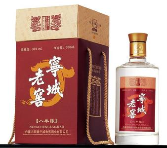

宁城特色美食 啦啦啦啦啦啦啦~想不想吃啊~嘿嘿嘿 小伙子~看完不留言这就很不够意思啦++留言
宁城老窖

在黑里河自然保护区内，由于土质肥沃气候湿润，生长着供人们食用的三十多种山野菜，他们或花或叶或根茎，均可入菜。尤其是金针菜、蕨菜、猴腿、野鸡膀子、春杨、春柳芽、山芥菜、山白菜、苦乐菜、蒲公英、山茼蒿、山梨花、山槐花、苦菜、榛蘑、白蘑、红蘑等，采摘后进行腌渍、消毒、脱盐等工艺，然后进行真空包装，以备食用，可凉拌可热炒。
这些山野菜来自大自然，属于纯天然的绿色食品，含有多种维生素及钙、铁等，不仅美味清香可口，具有较高的营养价值，同时有清热解毒、安神和胃、养颜保健之功效。
 打虎石全鱼宴远近闻名，已经成为宁城美味佳肴中的一个品牌．
打虎石全鱼宴远近闻名，已经成为宁城美味佳肴中的一个品牌．
打虎石全鱼宴首先采用打虎石水库内养殖的鲤鱼、鲢鱼、草鱼、银鱼、甲鱼、马口鱼等为原料，然后经过炖、烧、炒、炸等烹调工艺将各类鱼做成清炖鱼、炖鲢鱼头、炸鱼段、酱醋鱼、红烧鱼等几十道鱼菜，特别是清炖鱼头，取水库中之天然矿泉水，用温火慢炖，出锅即食，其鲜嫩、清香、无可比拟。
打虎石的鱼生长在无污染的水库内，不用人工撒食喂养，靠水体内天然的养分，有利于各类鱼类的生长，属于纯天然无污染的美味佳肴。